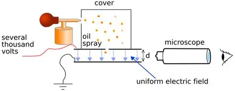

സബ്-ആറ്റോമിക കണങ്ങളുടെ കണ്ടുപിടുത്തം
1. സബ്-അറ്റോമിക് കഷണങ്ങൾ - ഒരു അവലോകനം
ആറ്റം എന്നത് വിഭജിക്കാൻ കഴിയാത്ത ഒന്നല്ല എന്ന് തെളിയിച്ചുകൊണ്ട്, അതിനുള്ളിൽ ചാർജ് ഉള്ള ചെറിയ കണങ്ങൾ (Sub-atomic particles) ഉണ്ടെന്ന് ശാസ്ത്രജ്ഞർ കണ്ടെത്തി. അവ പ്രധാനമായും മൂന്നെണ്ണമാണ്:
- ഇലക്ട്രോൺ (Electron - e^-): നെഗറ്റീവ് ചാർജ് (-1) ഉള്ള കണം. (കണ്ടുപിടിച്ചത്: ജെ.ജെ. തോംസൺ)
- പ്രോട്ടോൺ (Proton - p^+): പോസിറ്റീവ് ചാർജ് (+1) ഉള്ള കണം. (കണ്ടുപിടിച്ചത്: ഗോൾഡ്സ്റ്റീൻ / റുഥർഫോർഡ്)
- ന്യൂട്രോൺ (Neutron - n^0): ചാർജ് ഇല്ലാത്ത (ന്യൂട്രൽ ആയ) കണം. (കണ്ടുപിടിച്ചത്: ജെയിംസ് ചാഡ്വിക്ക്)
2. ഇലക്ട്രോണിന്റെയും കാതോഡ് രശ്മികളുടെയും കണ്ടുപിടിത്തം
ഇത് ജെ.ജെ. തോംസൺ നടത്തിയ കാതോഡ് റേ ട്യൂബ് പരീക്ഷണത്തിലൂടെയാണ് (Cathode Ray Tube Experiment) സാധ്യമാക്കിയത്.
- യാത്ര: ഉയർന്ന വോൾട്ടേജ് നൽകിയപ്പോൾ നെഗറ്റീവ് ഇലക്ട്രോഡായ കാതോഡിൽ നിന്ന് പോസിറ്റീവ് ഇലക്ട്രോഡായ ആനോഡിലേക്ക് അദൃശ്യമായ ചില രശ്മികൾ പ്രവഹിക്കുന്നതായി കണ്ടു. ഇവയാണ് കാതോഡ് രശ്മികൾ (Cathode Rays).
- ഫ്ലൂറസെൻ്റ് വസ്തുക്കൾ: ഈ രശ്മികൾ പ്രത്യേക വസ്തുക്കളിൽ തട്ടുമ്പോൾ തിളങ്ങുന്നു.
- ഇലക്ട്രോണുകളുടെ പ്രവാഹം: കാതോഡ് രശ്മികൾ എന്ന് പറയുന്നത് നെഗറ്റീവ് ചാർജ് ഉള്ള കണങ്ങളുടെ (ഇലക്ട്രോണുകളുടെ) പ്രവാഹമാണെന്ന് തോംസൺ തെളിയിച്ചു.
3. ജെ.ജെ. തോംസൺ പരീക്ഷണം: ഇലക്ട്രോണിന്റെ e/m അനുപാതം
3. J.J. Thomson's Experiment: e/m Ratio of Electron
ചിത്രത്തിലെ വിവിധ ഭാഗങ്ങളിൽ ക്ലിക്ക് ചെയ്ത് തോംസൺ പരീക്ഷണത്തിന്റെ ഘടന മനസ്സിലാക്കുക:
👆 മുകളിലുള്ള ഡയഗ്രത്തിലെ ഭാഗങ്ങളിലോ ബട്ടണുകളിലോ ക്ലിക്ക് ചെയ്ത് വിവരങ്ങൾ അറിയുക.
പ്രധാന ഫോർമുലയും ആശയവും (Formula Derivation):
ഈ ഫോർമുല എങ്ങനെ ലഭിക്കുന്നു? (How it's derived):
- ഇലക്ട്രിക് ഫോഴ്സ്: ഇലക്ട്രിക് ഫീൽഡ് മൂലം ഇലക്ട്രോണിൽ അനുഭവപ്പെടുന്ന ബലം Fe = e · E ആകുന്നു.
- മാഗ്നറ്റിക് ഫോഴ്സ്: മാഗ്നറ്റിക് ഫീൽഡിൽ ഇലക്ട്രോൺ ചലിക്കുമ്പോൾ Fb = e · v · B ബലം ഉണ്ടാകുന്നു.
- വേഗത കണ്ടെത്തൽ (Velocity): രണ്ടും തുല്യമാക്കുമ്പോൾ (e·E = e·v·B), ഇലക്ട്രോണിന്റെ വേഗത v = E / B എന്ന് കിട്ടുന്നു.
- സർക്കുലർ മോഷൻ: മാഗ്നറ്റിക് ഫീൽഡ് മാത്രം കൊടുക്കുമ്പോൾ സെൻട്രിപെറ്റൽ ഫോഴ്സും മാഗ്നറ്റിക് ഫോഴ്സും തുല്യമാകുന്നു (bev = mv²/r). ഇതിൽ നിന്ന് e/m = v / (B · r) എന്ന് ലഭിക്കുന്നു.
- അന്തിമ സമവാക്യം: വേഗതയുടെ (v) സ്ഥാനത്ത് E / B കൊടുത്താൽ അന്തിമമായി e/m = E / (B² · r) എന്ന് കിട്ടുന്നു!
ഇന്ററാക്ടീവ് സിമുലേറ്റർ (Interactive Simulator)
താഴെയുള്ള സ്ലൈഡറുകൾ മാറ്റി ഇലക്ട്രോണിന്റെ e/m അനുപാതം പരിശോധിക്കൂ:
4. ഇലക്ട്രോണിന്റെ ചാർജും മില്ലിക്കൻ പരീക്ഷണ ഉപകരണവും (Millikan's Apparatus)

അമേരിക്കൻ ഭൗതികശാസ്ത്രജ്ഞനായ ആർ.എ. മില്ലിക്കൻ (R.A. Millikan) ഓയിൽ ഡ്രോപ്പ് പരീക്ഷണത്തിലൂടെ ഇലക്ട്രോണിന്റെ കൃത്യമായ ചാർജ് കണ്ടുപിടിച്ചു:
- 1. Atomizer (സ്പ്രേ യൂണിറ്റ്) എണ്ണയെ വളരെ നേർത്ത തുളികളാക്കി ചേമ്പറിലേക്ക് സ്പ്രേ ചെയ്യുന്നു.
- 2. Metal Chamber / Cover പുറത്തെ കാറ്റും മറ്റ് തടസ്സങ്ങളും ഒഴിവാക്കി സുരക്ഷിതമായി നിർത്തിയിരിക്കുന്ന ഭാഗം.
- 3. Charged Plates & X-Rays X-Rays വഴി ചാർജ് നൽകുകയും പ്ലേറ്റുകളിലെ ഇലക്ട്രിക് ഫീൽഡ് വഴി വീഴ്ച നിയന്ത്രിക്കുകയും ചെയ്യുന്നു.
- 4. Microscope എണ്ണത്തുളികളുടെ ചലനവും വീഴ്ചയും സൂക്ഷ്മമായി നിരീക്ഷിക്കുന്നു.
ഫലം: ഒരു ഇലക്ട്രോണിന്റെ ചാർജ് $-1.6 \times 10^{-19} \text{ C}$ ആകുന്നു.
ഇലക്ട്രോണിന്റെ മാസ് കാണുന്ന സമവാക്യവും സിമുലേറ്ററും (Mass Formula & Derivation)
ഈ ഫോർമുല എങ്ങനെ ലഭിക്കുന്നു? (How the formula is derived):
- ആദ്യ പടി (e/m അനുപാതം): Step 1 (e/m Ratio): ജെ.ജെ. തോംസൺ പരീക്ഷണത്തിലൂടെ ഇലക്ട്രോണിന്റെ ചാർജും മാസും തമ്മിലുള്ള അനുപാതം (e/m) കണ്ടുപിടിച്ചു.
- രണ്ടാം പടി (ചാർജ് e): Step 2 (Charge e): മിലിക്കന്റെ ഓയിൽ ഡ്രോപ്പ് പരീക്ഷണത്തിലൂടെ ഇലക്ട്രോണിന്റെ കൃത്യമായ ചാർജ് (e = 1.6 × 10⁻¹⁹ C) കണ്ടെത്തി.
- അന്തിമ സമവാക്യം: Final Equation: ഈ രണ്ട് വാല്യൂസും ബന്ധപ്പെടുത്തുമ്പോൾ, Mass (m) = Charge (e) / (e/m ratio) എന്ന് ലഭിക്കുന്നു.
- അങ്ങനെ കണക്കാക്കുമ്പോൾ ഇലക്ട്രോണിന്റെ മാസ് m = 9.1 × 10⁻³¹ kg എന്ന് ലഭിക്കുന്നു!
ചാർജും e/m അനുപാതവും താഴെ മാറ്റി നോക്കൂ:
5. പ്രോട്ടോണിന്റെ കണ്ടുപിടിത്തവും കനാൽ റേകളും (Discovery of Proton & Canal Rays)
കാതോഡ് ട്യൂബിൽ വരുത്തിയ മാറ്റങ്ങളിലൂടെയാണ് ആറ്റത്തിലെ പോസിറ്റീവ് ചാർജ് ഉള്ള കണങ്ങളെ (പ്രോട്ടോൺ) ശാസ്ത്രലോകം കണ്ടെത്തിയത്.
- കാതോഡിലെ ചെറിയ സുഷിരങ്ങളിലൂടെ ആനോഡിൽ നിന്ന് കാതോഡിന്റെ ദിശയിലേക്ക് രശ്മികൾ പ്രവഹിച്ചു; ഇവയാണ് കനാൽ റേകൾ (Canal Rays / Anode Rays) എന്നറിയപ്പെടുന്നത്.
- ഇലക്ട്രോണിനെ അപേക്ഷിച്ച് ഭാരം വളരെ കൂടുതലുള്ള ഈ പോസിറ്റീവ് കണങ്ങൾക്ക് പിന്നീട് റുഥർഫോർഡ് ആണ് പ്രോട്ടോൺ എന്ന് പേരിട്ടത്.
- ആറ്റത്തിന്റെ ന്യൂക്ലിയസിൽ കാണപ്പെടുന്ന ഇവയ്ക്ക് +1 പോസിറ്റീവ് ചാർജും ഉണ്ട്.
6. ന്യൂട്രോണിന്റെ കണ്ടുപിടിത്തം (Discovery of Neutron)
ആറ്റത്തിന്റെ ഭാരം കണക്കാക്കിയപ്പോൾ, ഇലക്ട്രോണിന്റെയും പ്രോട്ടോണിന്റെയും ഭാരം കൂട്ടിയാൽ കിട്ടുന്നതിനേക്കാൾ കൂടുതൽ ഭാരം ആറ്റത്തിനുണ്ടെന്ന് ശാസ്ത്രജ്ഞർ കണ്ടെത്തി.
- 1932-ൽ ജെയിംസ് ചാഡ്വിക്ക് (James Chadwick) ബെറിലിയം പോലുള്ള മൂലകങ്ങളിൽ ആൽഫാ കണങ്ങൾ അടിപ്പിച്ച് പരീക്ഷണം നടത്തി.
- ചാർജ് ഇല്ലാത്ത, എന്നാൽ പ്രോട്ടോണിന് തുല്യമായ ഭാരമുള്ള കണം കണ്ടെത്തി. അതാണ് ന്യൂട്രോൺ.